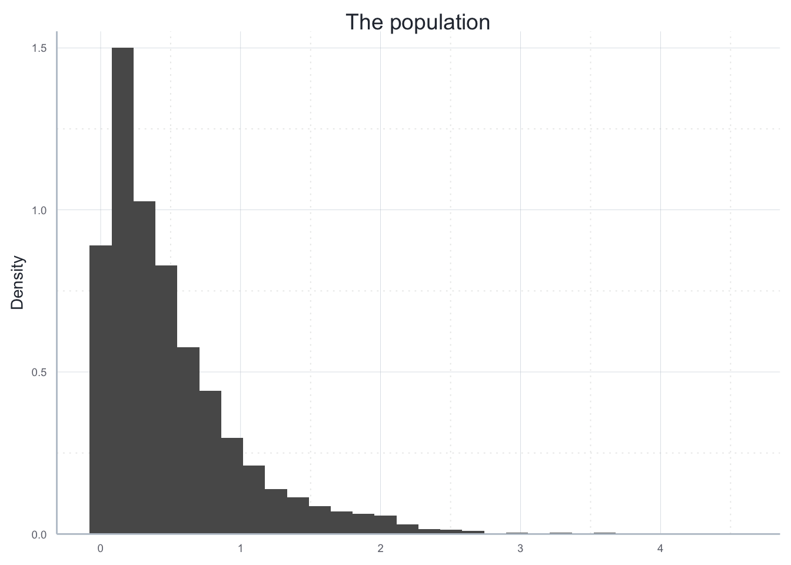
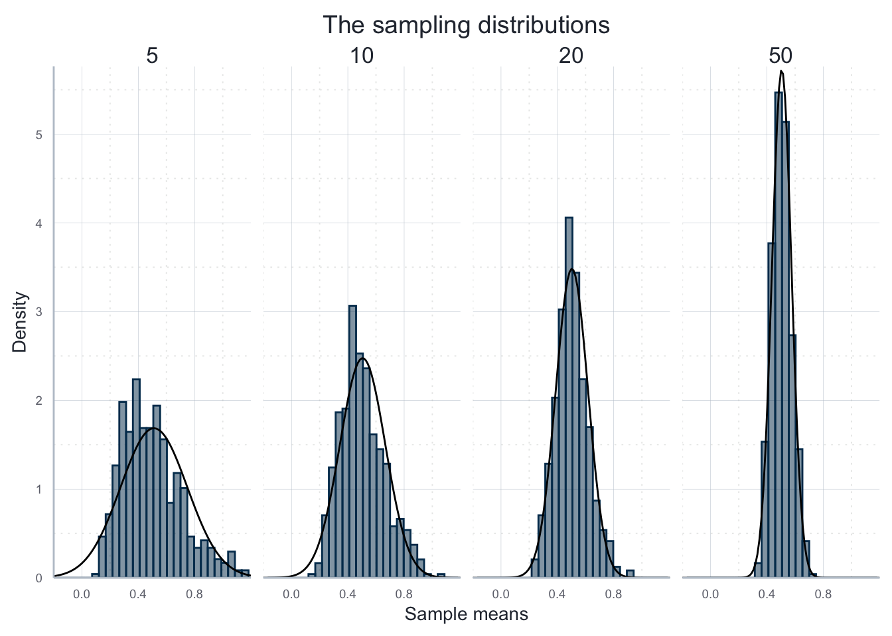

library(tibble)
library(data.table)
library(ggplot2)
library(ggpubr)
library(icaeDesign)The Central Limit Theorem
1 Packages used
2 Statement of the CLT
The CLT states that - if certain general conditions are met - that the distribution of the mean values of samples that were drawn from an arbitrary population tend to be normally distributed if the sample size becomes large enough.
This result holds irrespective of the distribution of the population as such.
3 Solution
Here is an example. Consider the following population parameter, which is clearly distributed exponentially:
set.seed(123)
# Population with 5000 exponentially distributed values
N <- 5000
exp_par <- 2
population <- rexp(n = N, rate = exp_par)
population_tab <- tibble("pop_n" = population)
true_mean <- mean(population)
population_plot <- ggplot(data = population_tab, aes(x = pop_n)) +
geom_histogram(aes(y = after_stat(density))) +
scale_y_continuous(expand = expansion(add = c(0, 0.05))) +
labs(title = "The population", y = "Density") +
theme_icae() +
theme(axis.title.x = element_blank())
population_plot
To illustrate the CLT, we conduct a MCS where we draw samples of sizes 5, 10, 20 or 50, compute the means of the samples:
iterations <- 500
sample_sizes <- c(5, 10, 20, 50)
mean_dist_list <- list()
for (i in seq_along(sample_sizes)){
sample_size <- sample_sizes[i]
sample_means <- rep(NA, iterations)
for (j in seq_len(iterations)){
sample_drawn <- sample(population, size = sample_size, replace = FALSE)
sample_means[[j]] <- mean(sample_drawn)
}
sample_means_tab <- tibble(
"sample_size"=sample_size,
"sample_means"=sample_means
)
mean_dist_list[[sample_size]] <- sample_means_tab
}
full_results <- data.table::rbindlist(mean_dist_list)We now visualize the resulting sampling distributions using histograms. To see how the distribution becomes more and more similar to a noramel distribution, we add a fitted normal distribution on each histogram:
hist_plot <- ggplot(
data = full_results, aes(x=sample_means)
) +
geom_histogram(
mapping = aes(y=after_stat(density)),
alpha=0.5, color="#00395B", fill="#00395B"
) +
scale_y_continuous(expand = expansion(add = c(0, 0.05))) +
scale_x_continuous(limits = c(-0.2, 1.2), expand = expansion()) +
facet_wrap(~sample_size, ncol = 4) +
stat_function(
data = dplyr::filter(full_results, sample_size==5),
fun = dnorm,
args = list(
mean = mean(dplyr::filter(full_results, sample_size==5)$sample_means),
sd = sd(dplyr::filter(full_results, sample_size==5)$sample_means))
) +
stat_function(
data = dplyr::filter(full_results, sample_size==10),
fun = dnorm,
args = list(
mean = mean(dplyr::filter(full_results, sample_size==10)$sample_means),
sd = sd(dplyr::filter(full_results, sample_size==10)$sample_means))
) +
stat_function(
data = dplyr::filter(full_results, sample_size==20),
fun = dnorm,
args = list(
mean = mean(dplyr::filter(full_results, sample_size==20)$sample_means),
sd = sd(dplyr::filter(full_results, sample_size==20)$sample_means))
) +
stat_function(
data = dplyr::filter(full_results, sample_size==50),
fun = dnorm,
args = list(
mean = mean(dplyr::filter(full_results, sample_size==50)$sample_means),
sd = sd(dplyr::filter(full_results, sample_size==50)$sample_means))
) +
labs(x = "Sample means", y = "Density", title = "The sampling distributions") +
theme_icae()
hist_plot
But note that the CLT does not hold universally, i.e. certain conditions must be met and it does not hold for all underlying distributions. It does not hold, for example, if the underlying distribution has infinite variance.